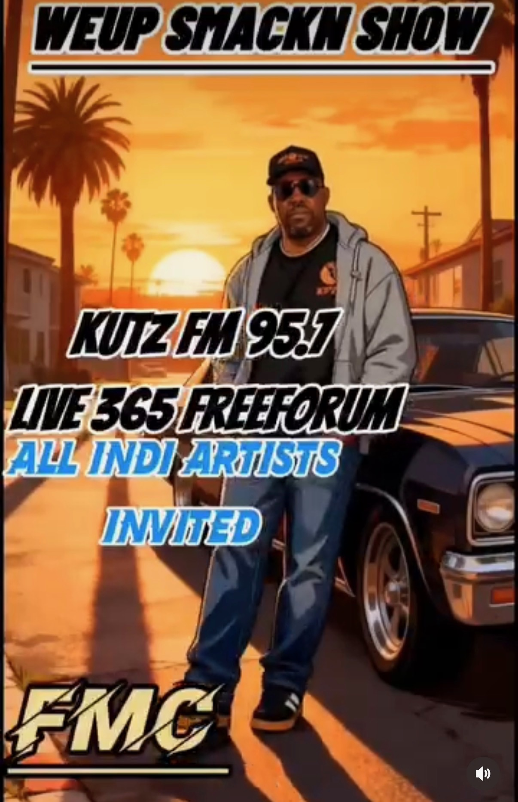

KUTZ FM
Sacramento freeform radio with community roots, independent voices, and room for music outside the corporate playlist.
Visit KUTZ FM →
KUTZ FM 95.7 • SACRAMENTO
Radio Personality • DJ • Host • Independent Artist Supporter
Bringing freeform radio energy to the airwaves and opening the door for independent artists to be heard.
ON THE AIR
Sacramento freeform radio with community roots, independent voices, and room for music outside the corporate playlist.
Visit KUTZ FM →Francoismusic47 uses the show as a discovery lane for independent artists and new sounds. Follow the station and creator for current submission opportunities and airtimes.
THE RADIO LANE
A distinct on-air presence connecting conversation, culture, and music.
A platform where emerging artists can reach listeners beyond algorithm-driven playlists.
Programming shaped by curiosity, community, and the freedom to move across genres.
Sacramento radio energy carried beyond the dial through the KUTZ Live365 stream.
THE CREATOR STORY
Francoismusic47 is an up-and-coming radio personality and DJ bringing his voice, ear, and independent spirit to KUTZ FM 95.7.
Through the WeUp Smackn Show, he is building a welcoming lane for independent artists while growing a community around freeform radio and real discovery.